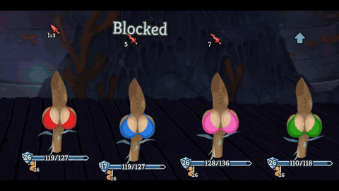
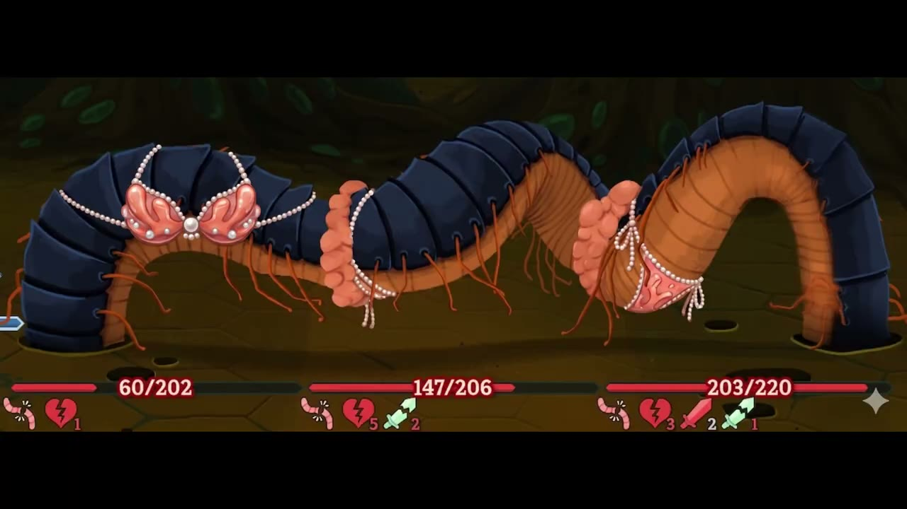
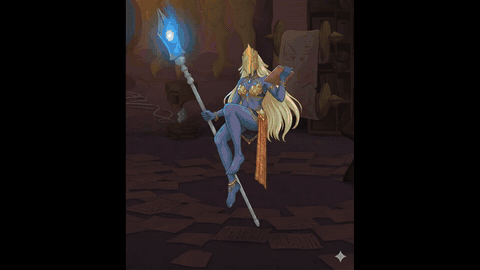

Slay the Spire 2 review: co-op deckbuilding with AI-redrawn enemies

Slay the Spire 2 is a roguelike deckbuilder: you climb the Spire collecting cards, relics and potions, and every climb plays out differently. Up to four players can climb together in the new co-op mode, which has multiplayer-only cards. It is in Early Access.
For this run I tried to redraw each enemy as sexy. The redrawn enemies are not in-game mods. They are AI-edited pictures laid over the video: I typed prompts into Grok, and later Gemini, outside the game. Grok did the early ones until it hit its free message limit. Then I switched to Gemini, which turned down at least one prompt and hit an ethical dilemma on the Act 1 boss. I forgot one enemy too, and the Act 1 boss and a few others never got a picture.

Nothing crashed. I played the Ironclad, grabbed a random relic from Neow, and finished off a two-phase reptile boss with Bash before the Architect fight ended on a Victory...? screen. The pink doodles on the map screens are the game's own co-op map drawing, and the black boxes over them are in the edit.

Near the end I asked if we were on baby mode, and a friend said, "We're only Ascension level 1, Ascension goes up to 10." So yes, baby mode, according to us. The shared map was my favorite part of the game: my friends kept drawing on it while we waited between fights, even if the editor had to cover the doodles with black boxes.